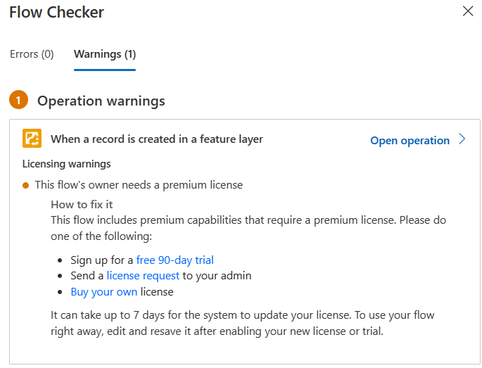
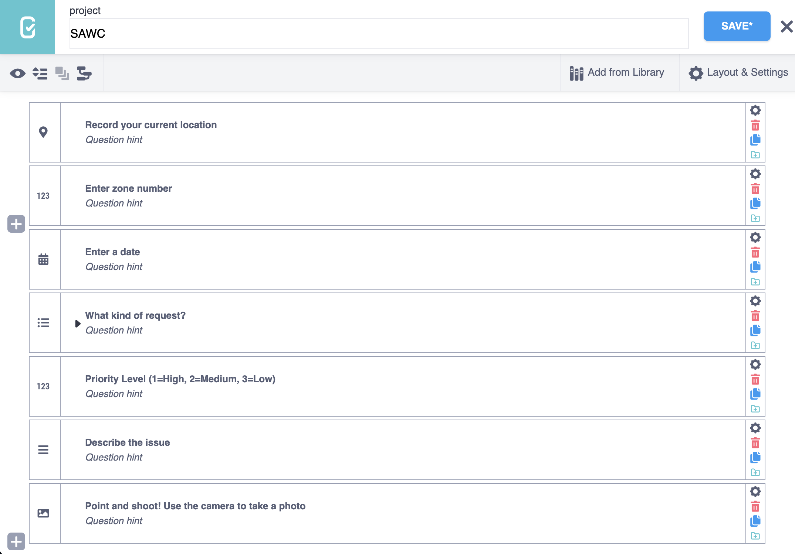
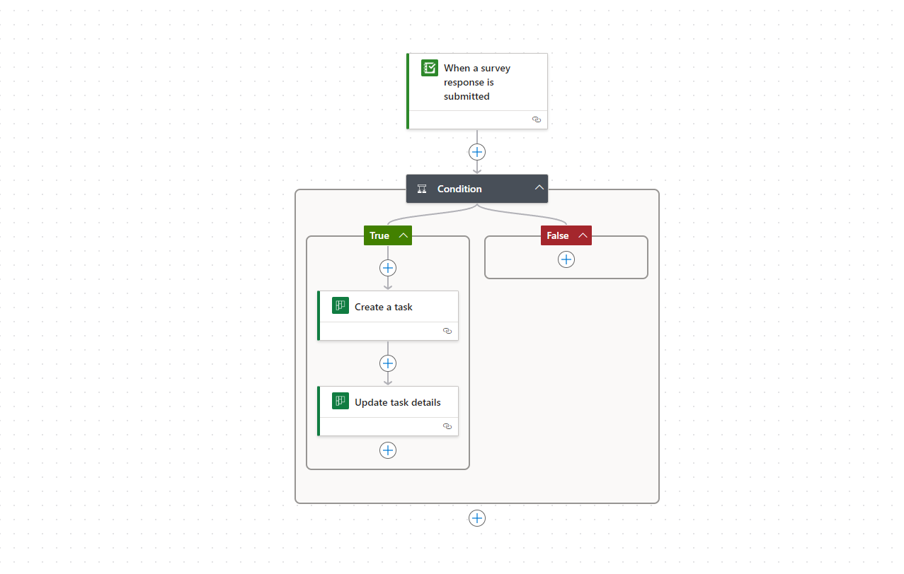
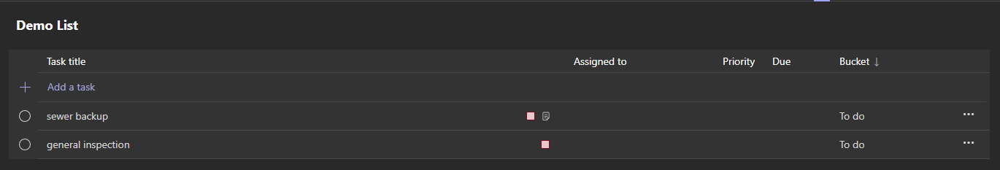
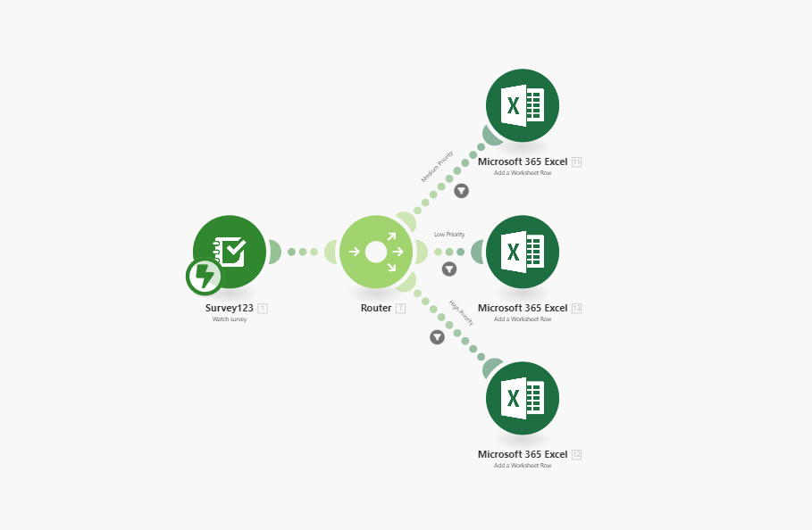
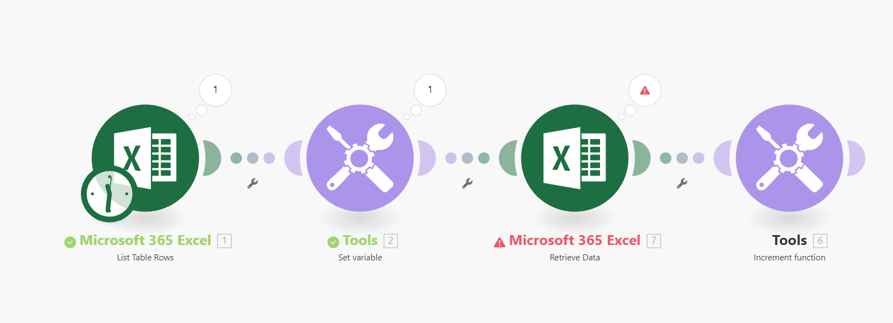

For the first part of the web time, our group investigated different pieces of building a solution from scratch. The idea was to build separate components of the solution and combine them together. The reason we didn’t end up doing this on ArcGIS Online was because we found the ArcGIS Solutions to be much better designed in terms of compatibility and layout/design. This was a good learning experience though to see how to design all these pieces separately, if we needed to redesign parts of a pre-made solution. Pieces of our build own solution look like:
Before using the Parks and Grounds Management solution, the citizen problem reporter solution was looked into. This solution has the pro of a nice dashboard and was fairly easy to use, however, the parks and grounds solution was designed overall better for what we are looking to solve. The citizen dashboard seemed to be designed for a city or municipality, but the parks and grounds one is more targeted, which was a bonus of it. Also, the parks and grounds surveys were already designed nicely for what we were looking to solve and how we could use the pre-existing categories in our solution. A con of the citizen solution was also that it wasn’t as user friendly from a manager side. The public side was easier to use but I found some confusion in how to find the right layer to assign tasks to staff. Our solution we hoped to design was meant to be straightforward and user friendly and this con did play a role in why it was not chosen for this. Overall, this solution is nice but not for the problem we were aiming to address. The dashboard can be found here.
At the start of our client discussions, I leaned towards using Field Maps for our needs. However, as we explored better options, we decided to shift away from Field Maps for report generation. Because we were interested in this flow, we tried using Microsoft Power Automate to notify managers of critical requests. But, we faced some errors during testing, so we decided not to proceed with it. Nonetheless, it was a valuable learning experience that helped us understand our options better.
The error shown below occurred when running the flow.
The team explored koboToolbox as an alternative to Survey123. During client discussions, we realized they were open to open source solutions. there is a community version that allows you to submit up to 5,000 surveys that's free. We created an account and set up a survey. The interface was easy to use and very quick to set up.
The survey worked great and there was even a built in report generator that was easy to use. Click here to view the public survey. Additionally, you have the ability to use REST services to automatically post submissions to a third party application. There was really nothing wrong with this solution, it was a great platform, but due to our experience and familiarity with Survey 123, we went with that instead. We also liked the look of Survey123 forms better.
After our client let us know that workforce may not be the best solution, we started to explore other ways that tasks can be assigned based on survey request. Our client uses Office 365, and there were web applications used from this suite: Power Automate and Tasks by Planner and To Do. The idea was to create a workflow that triggers when a survey response is submitted. The results are then created as a task in Tasks by Planner and To Do (in teams). First, we set up a sample group in teams and created a list within the sample group. Then in Power Automate, we set up a flow that connects to our survey123, and is filtered by priority level. Then a task is created using the feature attributes of the survey. The task could then be found within the teams planner app or from a web browser in the planner app.
 What was difficult about this flow was that even though there are so many fields to customize a task when it's created manually, within the automation actions in Power Automate, all we could change was the title of the task, the list it goes into, and label colour within the 'create a task' action. In the 'update task details' we are able to add a description and checklist options. What we can't do is attach a photo, set a location, change the priority level and set the due date. This makes the automated workflow redundant because a lot of manual work will still have to be done to set it up a task correctly.
We tried out Make to automate the excel workflow, similar to what we did with Power Automate in the integrated solution. We wanted to see if one software was more user friendly over the other, and to see if all the flow options were similar. We started by setting up a webhook connection to Survey123 and Excel OneDrive, similar to Power Automate. Next we set the trigger to be when a survey response is submitted and that was fine. We wanted to use a conditional if statement to control the flow of the next part. This is where we struggled, because although this web app is very easy to use, sometimes when a program is simplified, it makes it difficult to find the things you are looking for. Turned out the tool I was looking for was a router, and you can apply a conditional filter to it by clicking the settings to each connecting action. I was able to get the flow working very easily after that.
 We did like make for its user friendliness and simplicity, however, it did make things harder when you are coming from a technical background. Additionally, there was some errors that were encountered when setting the Excel 'add worksheet row' and 'retrieve data' action, where the table wasn't connecting. Going into the documentation for Excel, we found that it was severely lacking. Only holding info on how to create a table. We thought this was strange considering that there are so many other Excel actions not included in the documentation. We had to troubleshoot on our own, which might be an issue for our client. Power Automates documentation on the other hand is well made and easy to follow in most cases.